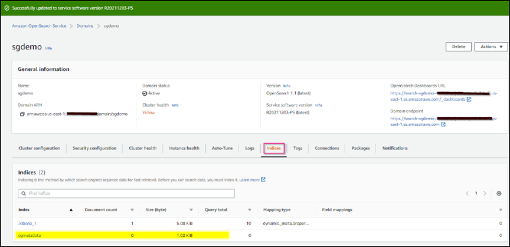
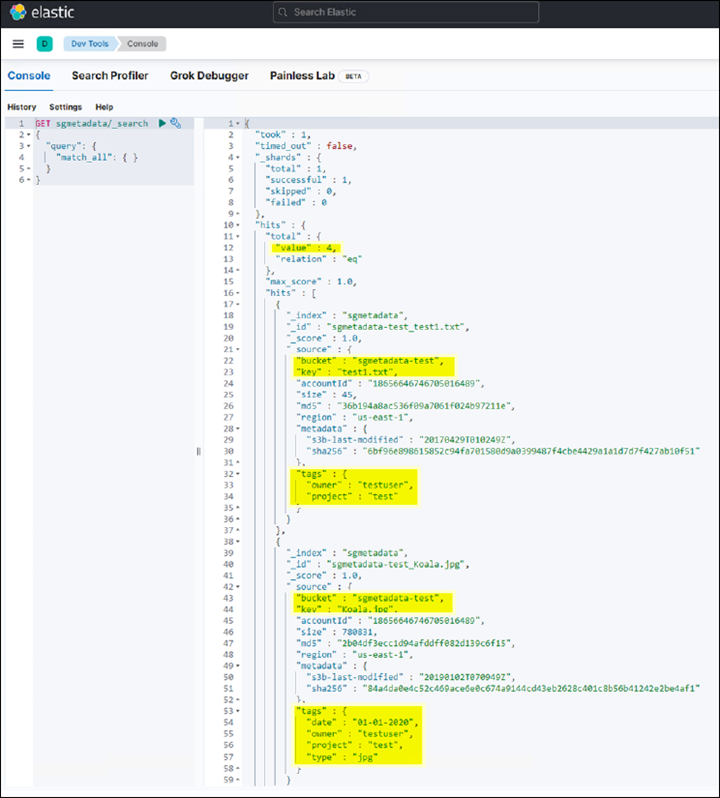

Solicitar cambios en el documento
Solicitar cambios en el documento Editar en GitHub
Editar en GitHub Guía del colaborador
Guía del colaboradorConfigure el servicio de integración de búsqueda StorageGRID
Colaboradores
En esta guía, se ofrecen instrucciones detalladas para configurar el servicio de integración de búsquedas de NetApp StorageGRID 11.6 con Amazon OpenSearch Service o Elasticsearch en las instalaciones.
Introducción
StorageGRID admite tres tipos de servicios de plataforma.
-
Replicación CloudMirror de StorageGRID. Reflejar objetos específicos desde un bloque de StorageGRID en un destino externo especificado.
-
Notificaciones. Notificaciones de eventos por bloque para enviar notificaciones sobre acciones específicas realizadas en los objetos a un Amazon simple Notification Service (Amazon SNS) externo especificado.
-
Servicio de integración de búsqueda. Envíe metadatos de objetos de simple Storage Service (S3) a un índice de Elasticsearch especificado, donde se pueden buscar o analizar los metadatos usando el servicio externo.
Los servicios de plataforma se configuran por el inquilino de S3 a través de la IU del administrador de inquilinos. Para obtener más información, consulte "Consideraciones sobre el uso de servicios de plataforma".
Este documento sirve como suplemento a la "Guía de inquilinos de StorageGRID 11.6" y proporciona instrucciones paso a paso y ejemplos para la configuración de endpoints y bloques para los servicios de integración de búsqueda. Las instrucciones de configuración de Amazon Web Services (AWS) o Elasticsearch en las instalaciones que se incluyen aquí son solo para fines de prueba o demostración básicos.
Las audiencias deben estar familiarizadas con Grid Manager y Tenant Manager y tener acceso al navegador S3 para realizar operaciones básicas de carga (PUT) y descarga (GET) para las pruebas de integración de búsqueda de StorageGRID.
Cree un inquilino y habilite los servicios de plataforma
-
Cree un inquilino S3 mediante Grid Manager, introduzca un nombre para mostrar y seleccione el protocolo S3.
-
En la página permisos, seleccione la opción permitir servicios de plataforma. Opcionalmente, seleccione otros permisos, si es necesario.

-
Configure la contraseña inicial del usuario raíz del inquilino o, si Identify federation está habilitada en la cuadrícula, seleccione el grupo federado con permiso de acceso raíz para configurar la cuenta de inquilino.
-
Haga clic en Iniciar sesión como raíz y seleccione cucharón: Crear y administrar cucharones.
Esto le lleva a la página Administrador de inquilinos.
-
En Tenant Manager, seleccione My Access Keys para crear y descargar la clave de acceso S3 para realizar pruebas posteriores.
Servicios de integración de búsqueda con Amazon OpenSearch
Configuración del servicio Amazon OpenSearch (antes Elasticsearch)
Utilice este procedimiento para una configuración rápida y sencilla del servicio OpenSearch sólo con fines de prueba/demostración. Si utiliza Elasticsearch en las instalaciones para los servicios de integración de búsqueda, consulte la sección Servicios de integración de búsqueda con Elasticsearch en las instalaciones.

|
Debe tener un inicio de sesión de la consola de AWS válido, una clave de acceso, una clave de acceso secreta y permisos para suscribirse al servicio OpenSearch. |
-
Cree un nuevo dominio siguiendo las instrucciones de "Introducción al servicio AWS OpenSearch", excepto lo siguiente:
-
Paso 4. Nombre de dominio: Sgdemo
-
Paso 10. Control de acceso detallado: Anule la selección de la opción Habilitar control de acceso detallado.
-
Paso 12. Política de acceso: Seleccione Configure Level Access Policy, seleccione la pestaña JSON para modificar la política de acceso mediante el ejemplo siguiente:
-
Reemplace el texto resaltado por su propio ID y nombre de usuario de gestión de acceso e identidades (IAM) de AWS.
-
Reemplace el texto resaltado (la dirección IP) por la dirección IP pública del equipo local que utilizó para acceder a la consola de AWS.
-
Abra una pestaña del navegador a. "https://checkip.amazonaws.com" Para encontrar su IP pública.
{ "Version": "2012-10-17", "Statement": [ { "Effect": "Allow", "Principal": {"AWS": "arn:aws:iam:: nnnnnn:user/xyzabc"}, "Action": "es:*", "Resource": "arn:aws:es:us-east-1:nnnnnn:domain/sgdemo/*" }, { "Effect": "Allow", "Principal": {"AWS": "*"}, "Action": [ "es:ESHttp*" ], "Condition": { "IpAddress": { "aws:SourceIp": [ "nnn.nnn.nn.n/nn" ] } }, "Resource": "arn:aws:es:us-east-1:nnnnnn:domain/sgdemo/*" } ] }
-
-
-
Espere de 15 a 20 minutos para que el dominio se active.

-
Haga clic en OpenSearch Dashboards URL para abrir el dominio en una nueva pestaña para tener acceso al panel. Si obtiene un error de acceso denegado, compruebe que la dirección IP de origen de la directiva de acceso esté correctamente configurada en la IP pública del equipo para permitir el acceso al panel de control de dominio.
-
En la página de bienvenida del panel, seleccione explorar por su cuenta. En el menú, vaya a Management → Dev Tools
-
En Herramientas de desarrollo → Consola , escriba
PUT <index>Donde se usa el índice para almacenar metadatos de objetos StorageGRID. Utilizamos el nombre de índice 'gmetadata' en el siguiente ejemplo. Haga clic en el símbolo de triángulo pequeño para ejecutar el comando PUT. El resultado esperado se muestra en el panel derecho como se muestra en la siguiente captura de pantalla de ejemplo.
-
Verifique que el índice sea visible desde la IU de Amazon OpenSearch en sgdomain > Indices.

Configuración de extremos de servicios de plataforma
Para configurar los extremos de servicios de la plataforma, siga estos pasos:
-
En el administrador de inquilinos, vaya a ALMACENAMIENTO (S3) > extremos de servicios de la plataforma.
-
Haga clic en Create Endpoint, introduzca lo siguiente y haga clic en Continue:
-
Ejemplo de nombre para mostrar
aws-opensearch -
El extremo de dominio en la captura de pantalla de ejemplo bajo el paso 2 del procedimiento anterior en el campo URI.
-
El dominio ARN utilizado en el paso 2 del procedimiento anterior en el campo URN y agregue
/<index>/_docAl final de ARN.En este ejemplo, URN se convierte en
arn:aws:es:us-east-1:211234567890:domain/sgdemo /sgmedata/_doc.

-
-
Para acceder al dominio sgDomain de Amazon OpenSearch, elija Access Key como tipo de autenticación y, a continuación, introduzca la clave de acceso y la clave secreta de Amazon S3. Para ir a la página siguiente, haga clic en continuar.

-
Para verificar el punto final, seleccione usar certificado CA del sistema operativo y probar y crear punto final. Si la verificación se realiza correctamente, aparece una pantalla de extremo similar a la siguiente figura. Si se produce un error de verificación, compruebe que URN incluya
/<index>/_docAl final de la ruta, la clave de acceso y la clave secreta de AWS son correctas.
Servicios de integración de búsqueda con Elasticsearch en las instalaciones
Configuración de Elasticsearch en las instalaciones
Este procedimiento es para una configuración rápida de Elasticsearch en las instalaciones y Kibana usando docker solo para fines de pruebas. Si ya existe el servidor Elasticsearch y Kibana, vaya al paso 5.
-
Siga este "Procedimiento de instalación de Docker" para instalar el docker. Utilizamos la "Procedimiento de instalación de CentOS Docker" en esta configuración.
sudo yum install -y yum-utils sudo yum-config-manager --add-repo https://download.docker.com/linux/centos/docker-ce.repo sudo yum install docker-ce docker-ce-cli containerd.io sudo systemctl start docker
-
Para iniciar docker después del reinicio, introduzca lo siguiente:
sudo systemctl enable docker
-
Ajuste la
vm.max_map_countvalor hasta 262144:sysctl -w vm.max_map_count=262144
-
Para mantener el ajuste después del reinicio, introduzca lo siguiente:
echo 'vm.max_map_count=262144' >> /etc/sysctl.conf
-
-
Siga la "Guía de inicio rápido de Elasticsearch" Sección autogestionada para instalar y ejecutar Elasticsearch y Kibana docker. En este ejemplo, instalamos la versión 8.1.

Tenga en cuenta el nombre de usuario/contraseña y el token creados por Elasticsearch, necesita esos elementos para iniciar la autenticación del extremo de la plataforma StorageGRID y la interfaz de usuario de Kibana. 
-
Después de que se haya iniciado el contenedor de Docker de Kibana, el enlace de URL
https://0.0.0.0:5601aparecen en la consola. Reemplace 0.0.0.0 por la dirección IP del servidor en la dirección URL. -
Inicie sesión en la interfaz de usuario de Kibana con el nombre de usuario
elasticY la contraseña generada por Elastic en el paso anterior. -
Para iniciar sesión por primera vez, en la página de bienvenida del panel, seleccione explorar por su cuenta. En el menú, seleccione Management > Dev Tools.
-
En la pantalla Dev Tools Console, introduzca
PUT <index>Dónde se usa este índice para almacenar metadatos de objetos StorageGRID. Usamos el nombre del índicesgmetadataen este ejemplo. Haga clic en el símbolo de triángulo pequeño para ejecutar el comando PUT. El resultado esperado se muestra en el panel derecho como se muestra en la siguiente captura de pantalla de ejemplo.
Configuración de extremos de servicios de plataforma
Para configurar extremos para servicios de plataforma, siga estos pasos:
-
En el Administrador de inquilinos, vaya a ALMACENAMIENTO (S3) > extremos de servicios de la plataforma
-
Haga clic en Create Endpoint, introduzca lo siguiente y haga clic en Continue:
-
Ejemplo de nombre para mostrar:
elasticsearch -
URI:
https://<elasticsearch-server-ip or hostname>:9200 -
URN:
urn:<something>:es:::<some-unique-text>/<index-name>/_docDonde el nombre de índice es el nombre que utilizó en la consola de Kibana. Ejemplo:urn:local:es:::sgmd/sgmetadata/_doc
-
-
Seleccione HTTP básico como tipo de autenticación, introduzca el nombre de usuario
elasticY la contraseña generada por el proceso de instalación de Elasticsearch. Para ir a la página siguiente, haga clic en continuar.
-
Seleccione no verificar certificado y probar y Crear extremo para verificar el extremo. Si la verificación se realiza correctamente, aparece una pantalla de punto final similar a la siguiente captura de pantalla. Si se produce un error en la verificación, compruebe que las entradas de URN, URI y nombre de usuario/contraseña sean correctas.

Configuración del servicio de integración de búsqueda de bloques
Una vez creado el extremo de servicio de la plataforma, el siguiente paso es configurar este servicio a nivel de bloque para enviar metadatos de objetos al extremo definido cada vez que se crea, se elimina o se actualizan sus metadatos o etiquetas.
Puede configurar la integración de búsqueda mediante el Administrador de inquilinos para aplicar un XML de configuración de StorageGRID personalizado a un bloque de la siguiente forma:
-
En el administrador de inquilinos, vaya a STORAGE(S3) > Buckets
-
Haga clic en Create Bucket, introduzca el nombre del bloque (por ejemplo,
sgmetadata-test) y acepte el valor predeterminadous-east-1región. -
Haga clic en Continue > Create Bucket.
-
Para abrir la página bucket Overview, haga clic en el nombre del bloque y, a continuación, seleccione Platform Services.
-
Seleccione el cuadro de diálogo Habilitar integración de búsqueda. En el cuadro XML proporcionado, introduzca el XML de configuración mediante esta sintaxis.
El URN resaltado debe coincidir con el extremo de servicios de plataforma definido. Puede abrir otra pestaña del explorador para acceder al administrador de inquilinos y copiar el URN desde el extremo de servicios de plataforma definido.
En este ejemplo, no hemos utilizado ningún prefijo, lo que significa que los metadatos de cada objeto de este bloque se envían al extremo de Elasticsearch definido previamente.
<MetadataNotificationConfiguration> <Rule> <ID>Rule-1</ID> <Status>Enabled</Status> <Prefix></Prefix> <Destination> <Urn> urn:local:es:::sgmd/sgmetadata/_doc</Urn> </Destination> </Rule> </MetadataNotificationConfiguration> -
Utilice el navegador S3 para conectarse a StorageGRID con la clave secreta/acceso de inquilino y cargar objetos de prueba a.
sgmetadata-testagrupe y añada etiquetas o metadatos personalizados a los objetos.
-
Utilice la interfaz de usuario de Kibana para verificar que los metadatos del objeto se cargaron en el índice de metadatos sg.
-
En el menú, seleccione Management > Dev Tools.
-
Pegue la consulta de ejemplo en el panel de la consola de la izquierda y haga clic en el símbolo de triángulo para ejecutarla.
El resultado de ejemplo de consulta 1 de la siguiente captura de pantalla de ejemplo muestra cuatro registros. Esto coincide con el número de objetos del segmento.
GET sgmetadata/_search { "query": { "match_all": { } } }
El resultado de ejemplo de la consulta 2 en la siguiente captura de pantalla muestra dos registros con el tipo de etiqueta jpg.
GET sgmetadata/_search { "query": { "match": { "tags.type": { "query" : "jpg" } } } }+ image::../media/storagegrid-search-integration-service/sg-sis-query-two-sample.png[Ejemplo de la consulta 2]
-
Dónde encontrar información adicional
Si quiere más información sobre el contenido de este documento, consulte los siguientes documentos o sitios web: